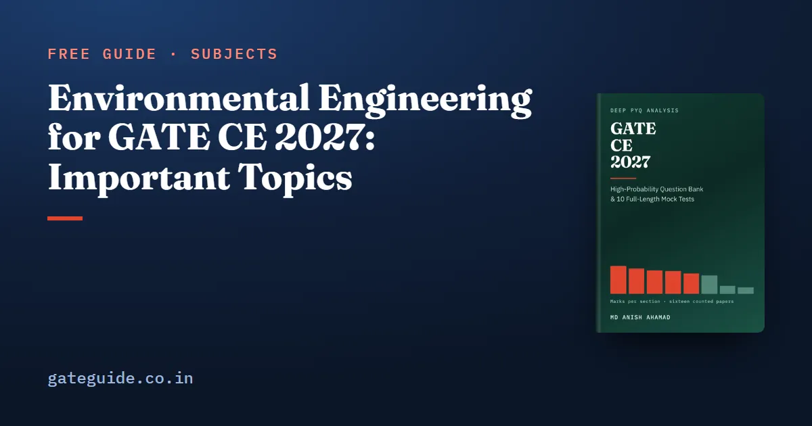

Environmental Engineering for GATE CE 2027: Important Topics

Environmental Engineering averaged 11.1 marks a paper across all sixteen GATE Civil papers from 2019 to 2026, and one topic inside it, water and waste water quality and treatment, carried 69 per cent of those marks. Its formulae are short and few. That combination makes it one of the quickest sections in the CE paper to turn study hours into marks, and the one that repays a last-minute formula sheet more than any other.
In this guide
Key takeaways
- Mean 11.1 marks a paper, range 5: the lowest paper had 8 and the highest 13.
- Water and waste water quality and treatment drew 123 of the section's 177 counted marks. No topic in any section of the counted record is larger.
- Air pollution drew 3 to 6 marks in every counted year. Municipal solid wastes drew nothing in either 2026 paper.
- The 2027 syllabus adds tertiary treatment, already examined under older wording (2019 Set 1, Q.42), and the basics of landfill design and operation, never examined. It removes nothing.
- Almost the whole section reduces to a handful of short relations that fit on one page.
What the section is worth
The evidence is 111 questions and 177 marks, counted question by question from Set 1 and Set 2 of every year from 2019 to 2026 and checked against the official answer keys. Civil is sat as two different papers each year, which is why every question cited here names its set. How the two sets are scored against each other is explained in how GATE scores are normalised.
The section's range hides one sharp event. Both 2022 papers and both 2023 papers gave it 13 marks. Both 2024 papers then gave it 8, a five-mark fall reproduced across both sets, before it recovered to 10 and 11. That dip was not the section shrinking. Water and waste water treatment fell to 9 marks across the two 2024 papers, against 14 to 19 in every other year, and that one topic accounts for almost the whole drop.
The three topics, by counted marks
| Topic | Marks | Questions | Share | Trend (2023–26 minus 2019–22) | Last seen |
|---|---|---|---|---|---|
| Water and Waste Water Quality and Treatment | 123 | 74 | 69% | −5 | 2026 |
| Air Pollution | 32 | 22 | 18% | level | 2026 |
| Municipal Solid Wastes | 22 | 15 | 12% | −2 | 2025 |
Nothing else in the paper concentrates like this. Geotechnical Engineering, by contrast, spreads its marks over twelve topics with none above 13 per cent. Water and waste water treatment alone outweighs every other topic in the counted record, including quantitative aptitude at 96 marks and structural analysis at 86. It is also one of the twenty-six topics that drew marks in all eight counted years, a group that carries 1,256 of the 1,600 counted marks. Air pollution is in that group too.
Falls of two and five marks across two blocks of eight papers are weak evidence, and most of water and waste water's five is the single 2024 dip. Read the trend column as "roughly steady", not as a decline.
Water and waste water: the four clusters
The syllabus line is long, and every part of it has been examined. Counted questions include 2019 Set 1, Q.20, Q.34, Q.41 and Q.42, and 2019 Set 2, Q.10 and Q.32. The recurring calculations fall into four groups.
Water quality. BOD and its rate constant, hardness expressed as , and chlorine demand against residual. Mixing the first two expressions below is the classic slip:
Water treatment. The sedimentation tank is the favourite vehicle. 2019 Set 1, Q.34 turned on removal efficiency in a rectangular basin, overflow rate against the Stokes settling velocity. Efficiency depends on the plan area, not on depth. The three relations are:
Coagulant dose and filter sizing round out the cluster.
Sewerage. Quantity of domestic wastewater, then sewer design by Manning with for a pipe running full, followed by the self-cleansing velocity check. Population forecasting sits beside it; the geometric form is .
Biological treatment. The activated sludge process: the food-to-microorganism ratio, MLSS, and the sludge volume index:
The Streeter–Phelps oxygen sag belongs here too.
One convention costs more marks than any formula. Hardness, alkalinity and most water-quality parameters are reported as calcium carbonate equivalents, and the conversion uses equivalent weights, not molecular weights. For reference, IS 10500 puts total hardness at 200 mg/L acceptable and 600 mg/L permissible where no alternative source exists.
Air pollution: small, steady, conceptual
Air pollution drew 3 to 6 marks in every counted year, both sets combined, which works out to roughly two marks a paper. Counted questions include 2019 Set 1, Q.18 and Q.40; 2019 Set 2, Q.9; 2020 Set 1, Q.63; and 2021 Set 1, Q.23.
The examined ground is short: pollutant types and sources, lapse rates and atmospheric stability, the Gaussian plume and effective stack height, control equipment (cyclones, electrostatic precipitators, bag filters, scrubbers), and air quality standards with the AQI. Lapse rate and stability is the single most recurring concept, and it is a comparison rather than a calculation: set the environmental lapse rate against the dry adiabatic rate. Effective stack height is the physical height plus plume rise, . A settling chamber uses the same overflow-rate logic as a sedimentation tank, , so one idea serves two topics.
For the plume and exponential calculations, practise on the GATE virtual calculator rather than a handheld one.
Municipal solid wastes: read once, do not over-invest
This is the smallest topic, and it swings the most relative to its size. It drew 6 marks across the two 2022 papers and nothing in either 2026 paper. Counted questions include 2019 Set 2, Q.41; 2020 Set 2, Q.63; 2021 Set 1, Q.21; 2021 Set 2, Q.14; and 2022 Set 2, Q.26 and Q.27.
Most of its questions are one-mark and descriptive: waste characteristics, generation, collection and transport, the reuse and recycling hierarchy, energy recovery, composting and incineration. The numerical ones are few. The compaction ratio is a ratio of densities, or equivalently the inverse ratio of volumes, , and it leads straight into landfill volume.
What 2027 adds
Two additions and one rewording, all at the tail end of the process train.
- Tertiary treatment. The line now reads "primary, secondary and tertiary treatment"; 2026 named only the first two. Tertiary treatment is what goes beyond secondary: nutrient removal, further filtration, and disinfection. It is what makes treated sewage fit for the reuse the syllabus already named. The phrase is new, but the ground is not entirely: 2019 Set 1, Q.42 asked for the length of a chlorine contact tank, a disinfection calculation. Know what tertiary adds over secondary and why.
- Basics of landfill design and operation. New under municipal solid wastes, and never examined in the sixteen counted papers. Read it once properly: liner systems, leachate collection, gas management and the volume calculation.
- Sludge treatment and disposal replaces 2026's "sludge disposal".
None of this is new ground of the kind Transportation Planning is elsewhere in the paper. Prepare each as part of its parent topic. The official wording can change, so check it against the current syllabus PDF on gate2027.iitm.ac.in.
How to prepare the section
- Put almost all your time into water and waste water. Sixty-nine per cent of the counted marks sit there, and it has been examined every year.
- Take air pollution next. It is the best marks-per-hour in the section: a short syllabus, reliable every year, much of it conceptual.
- Give solid waste one careful reading plus the landfill volume and compaction calculations.
- Build one formula page and revise from it. BOD, overflow rate, Stokes, detention time, F/M, SVI, Manning for sewers, population growth, effective stack height, plume concentration and compaction ratio are nearly the whole section. Short formulae are the reason this section repays late revision.
- Drill the conversion until it is automatic. A numerical answer question carries no negative marking, but a wrong conversion still scores zero; the marking scheme, common to every GATE paper, sets out the rules for each question type.
This guide gives the counted topic shares and the formulae that recur. The GATE CE 2027 book adds the year-by-year count for both sets, thirty-two Environmental questions written in proportion to that evidence (twenty-two on water and waste water, six on air pollution, four on solid waste), each with a worked solution, and ten full mock tests in the 2027 pattern. A free 37-page preview is available. For the exam calendar, see GATE 2027 exam dates.
Frequently asked questions
How many marks is Environmental Engineering in GATE CE?
Across all sixteen GATE Civil papers from 2019 to 2026, Set 1 and Set 2 in each year, it averaged 11.1 marks a paper, with a lowest paper of 8 and a highest of 13. Both 2024 papers sat at the bottom of that range and both 2022 and 2023 papers at the top.
Which Environmental Engineering topic is most important for GATE CE?
Water and waste water quality and treatment. It drew 123 of the section's 177 counted marks, or 69 per cent, and it is the largest single topic in the whole counted record of 1,040 questions. Air pollution drew 32 marks and municipal solid wastes 22 across the same sixteen papers.
What is new in the GATE CE 2027 Environmental Engineering syllabus?
Two phrases. The treatment line now reads primary, secondary and tertiary treatment, where 2026 named only primary and secondary, and municipal solid wastes gains basics of landfill design and operation. Sludge disposal has also become sludge treatment and disposal. Nothing was removed. Confirm the current wording in the official syllabus PDF.
Can I skip municipal solid wastes for GATE CE 2027?
Not safely. It is the smallest topic, 22 counted marks, and neither 2026 paper had a question on it. But it drew 6 marks across the two 2022 papers, and the 2027 syllabus has just widened it with landfill design. Read it once, learn the volume and compaction calculations, and move on.
Is air pollution worth preparing for GATE CE?
Yes, and it is cheap. It drew between 3 and 6 marks in every counted year, both sets combined, with no upward or downward drift. The examined ground is short, and its most recurring idea, lapse rate and atmospheric stability, is a comparison of two rates rather than a long calculation.
Sources
- GATE 2027 official website (IIT Madras)
- GATE 2027 CE syllabus PDF (official)
- GATE official paper archive (IIT Madras)
- GATE 2026 papers and answer keys (IIT Guwahati)
Dates, fees and the syllabus are set by the GATE 2027 organising institute and can change. Always confirm at gate2027.iitm.ac.in.